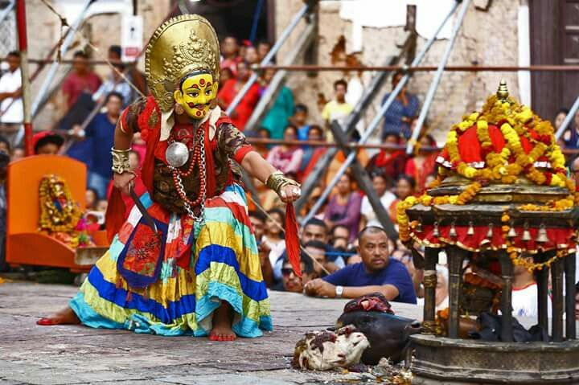
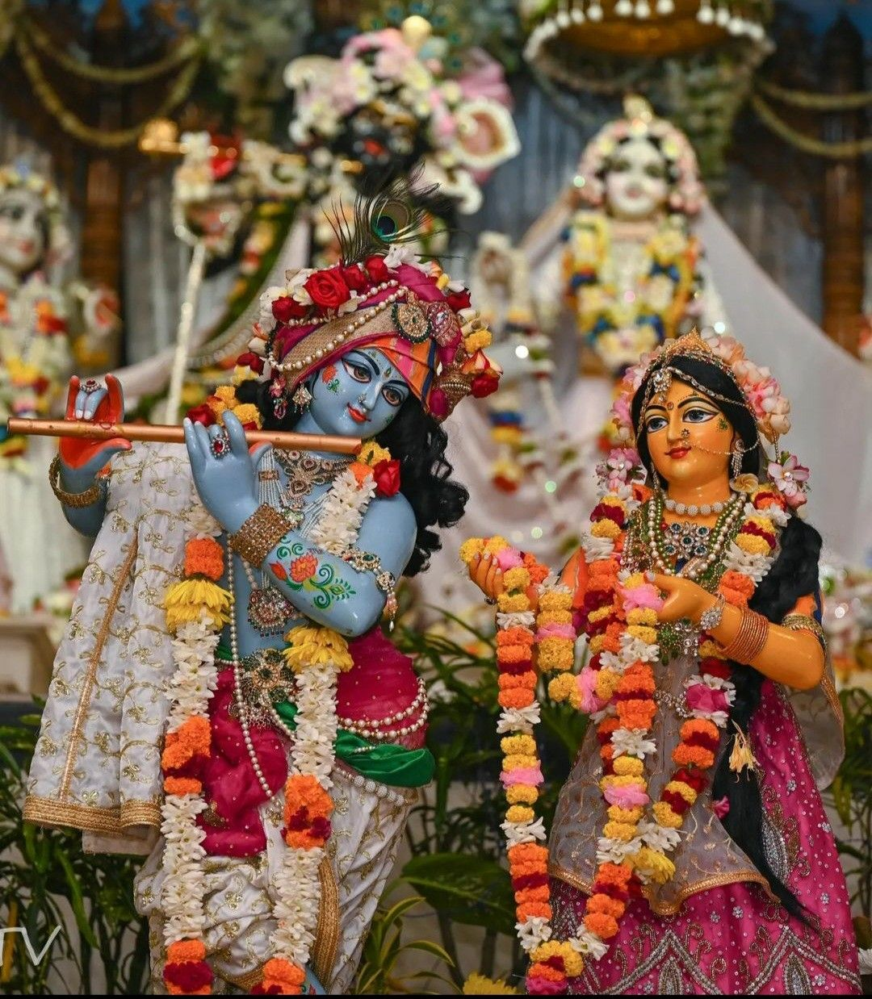
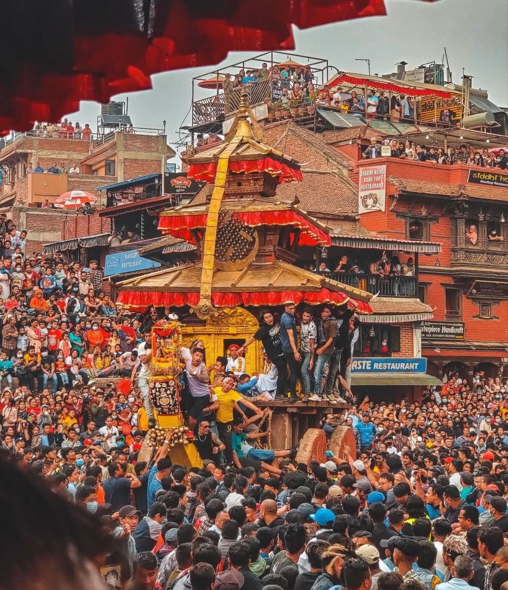
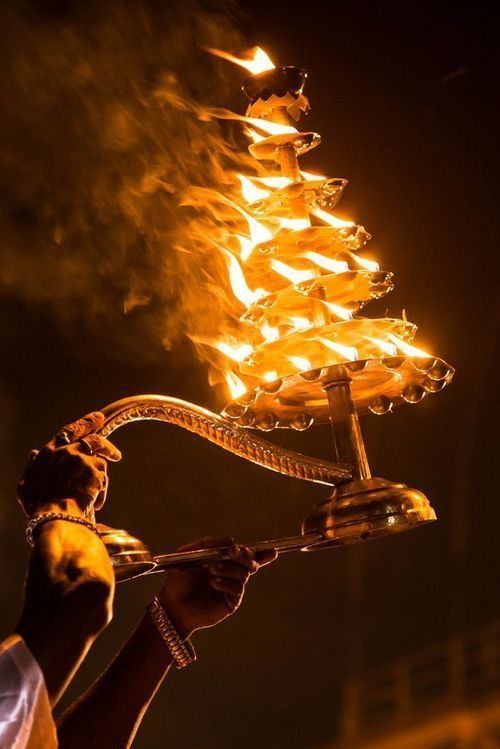
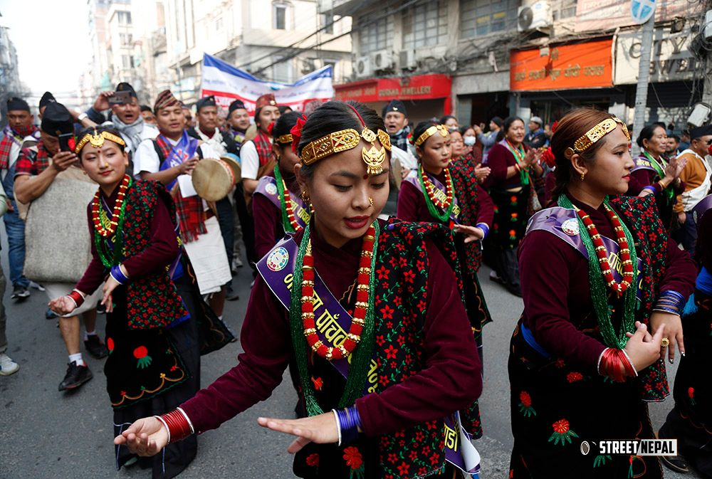
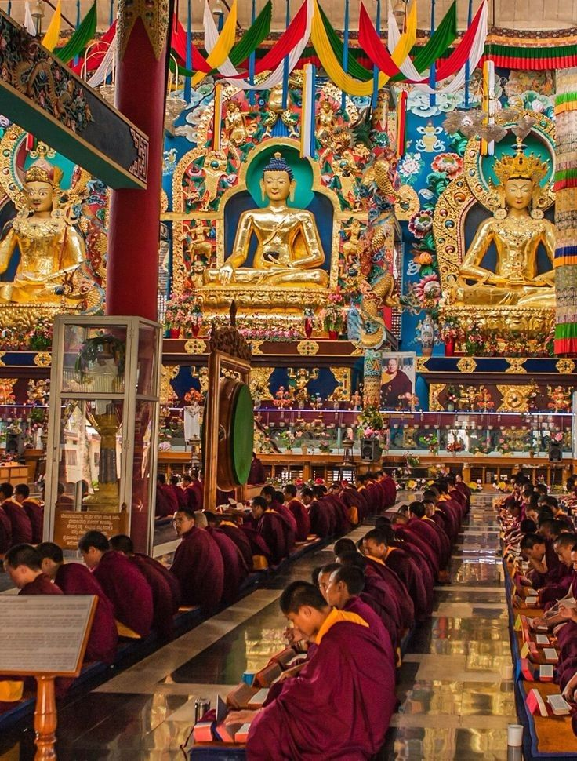
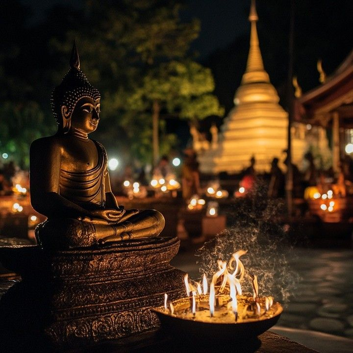
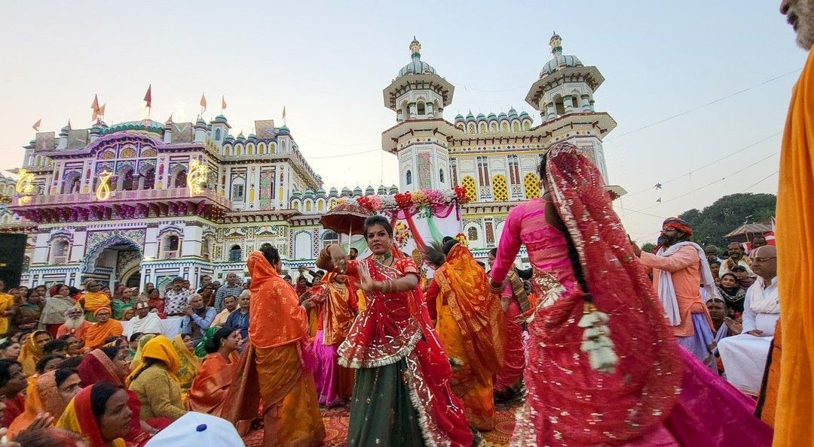
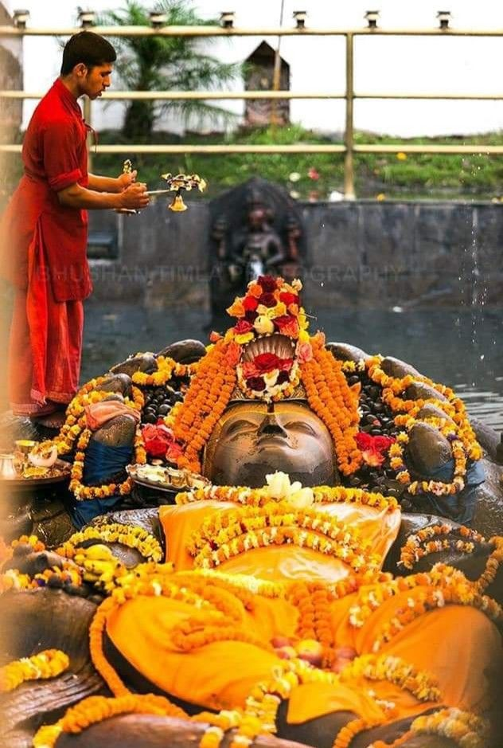
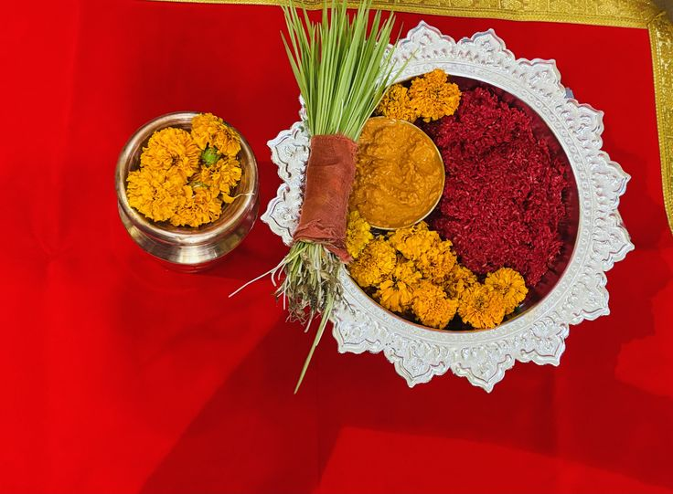

Cultural Heritage
Discover 10 vibrant cultural and spiritual hubs across Nepal.

Kathmandu Durbar Square
A sprawling complex of temples and palaces serving as the seat of the Malla and Shah kings. It is renowned for housing the Kumari Bahal, the residence of the world's only Living Goddess.

Patan Durbar Square
Uniquely celebrated for its refined architecture and high concentration of bronze and copper metalwork. It features the stunning Krishna Mandir, built entirely of stone.

Bhaktapur Durbar Square
Known as the "City of Devotees," it preserves a true medieval atmosphere. Famous for the soaring Nyatapola Temple, traditional pottery, and local Juju Dhau (King Curd).

Pashupatinath Temple
The most sacred Hindu temple dedicated to Lord Shiva globally. It is deeply profound for its open-air cremation ceremonies and daily evening Sandhya Aarti rituals.

Boudhanath Stupa
One of the largest spherical stupas in the world and the vibrant focal point of Tibetan Buddhism in Nepal. Known for its massive mandala base and daily Kora rituals.

Swayambhunath Stupa
Over 2,000 years old, the "Monkey Temple" is a perfect symbol of religious syncretism, blending Hindu and Buddhist iconography while offering panoramic views of the valley.

Lumbini
The documented birthplace of Siddhartha Gautama (Lord Buddha) in 623 B.C. Features the ancient Ashoka Pillar and numerous international monasteries in the Monastic Zone.

Janaki Mandir
A visually striking masterpiece of "Nau Lakha" architecture that blends Mughal and Hindu Rajput styles. It serves as a major pilgrimage site honoring the birthplace of Goddess Sita.

Changunarayan Temple
The oldest functional temple in Nepal. It acts as an open-air museum filled with masterpieces of stone sculpture and inscriptions from the ancient Licchavi period.

Gorkha Durbar
A historic hilltop fortress and the ancestral home of the Shah Dynasty. It is culturally foundational as the birthplace of King Prithvi Narayan Shah, who unified modern Nepal.